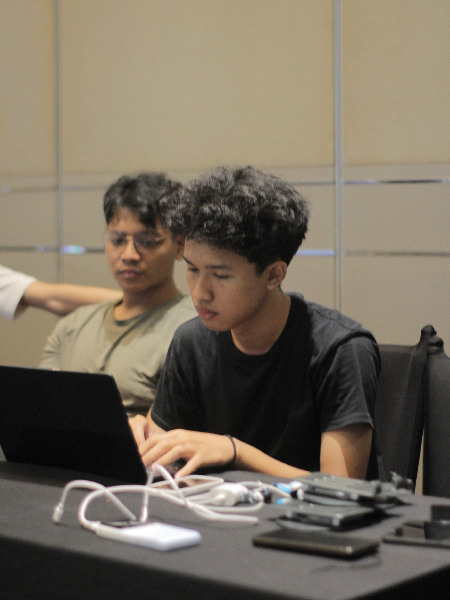
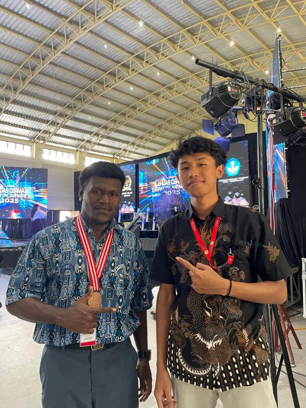
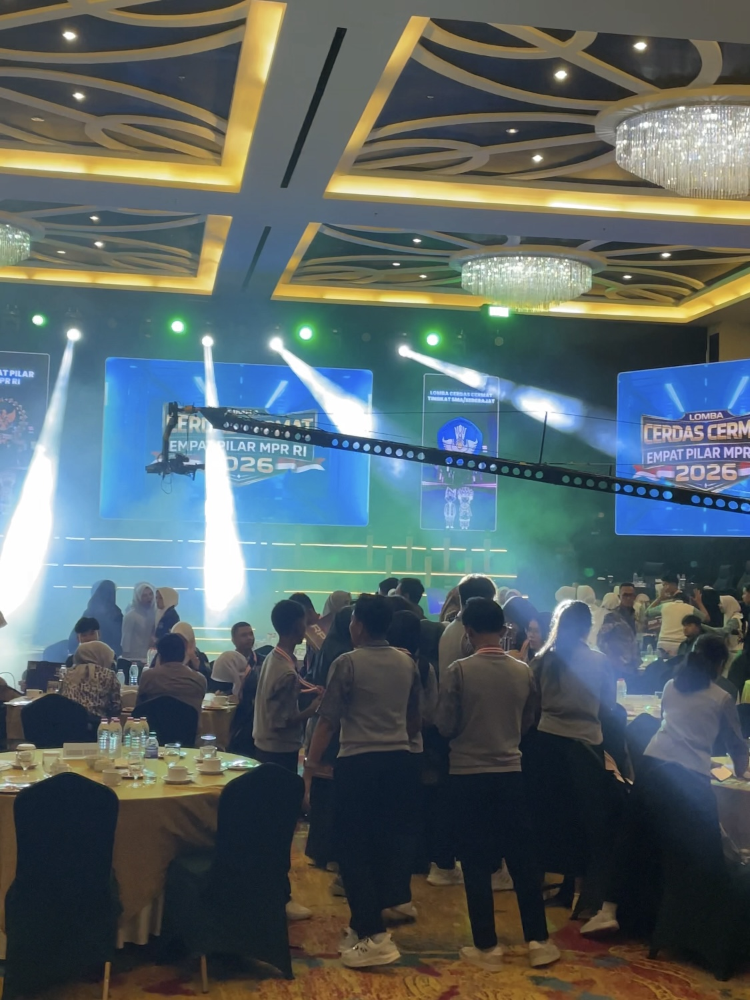
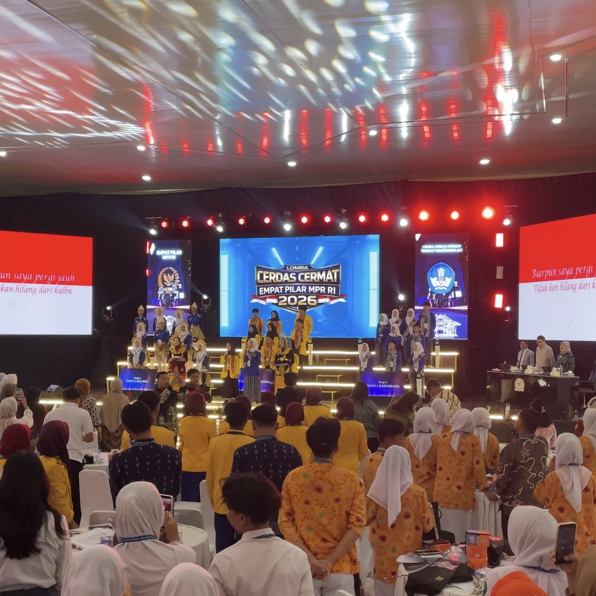
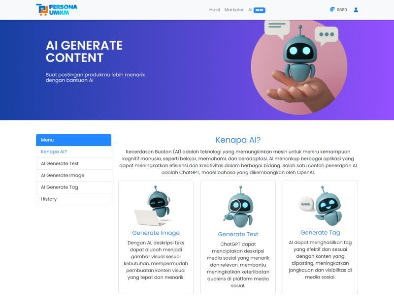
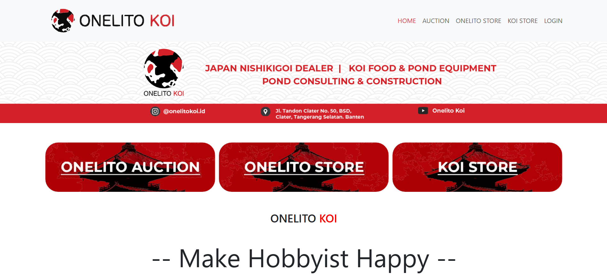
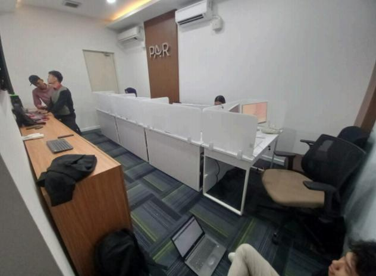
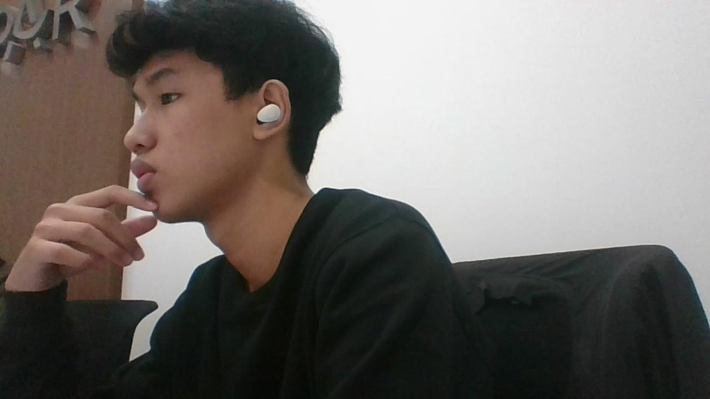
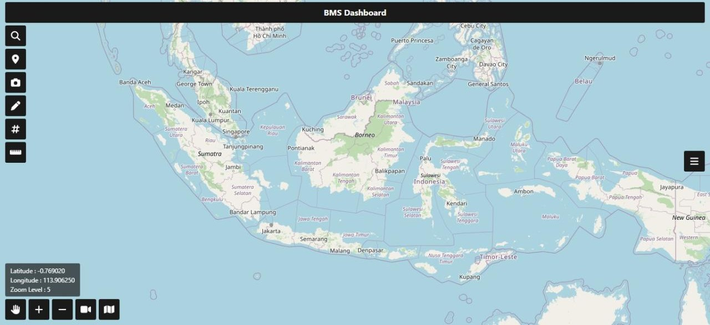
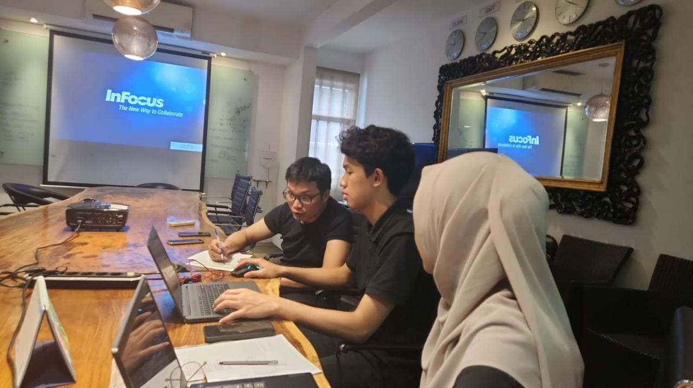

@anggaferdani
I am Angga Ferdani, a Full Stack Web Developer experienced in building end-to-end web applications, from frontend and backend development to databases and deployment. I am passionate about technology and digital product development, and I continuously improve my skills by exploring new technologies and approaches.
Contact
Work Experience
Spero Mahakarya Nusantara
-
Full Stack Web Developer — Full Time
Mar 2023 – Present
- Developed and deployed 10+ production web applications across frontend, backend, databases, and deployment.
- Built real-time systems supporting 1,000+ users for live auctions, monitoring dashboards, and data synchronization.
- Integrated APIs, third-party services, payment gateways, shipping services, and IoT devices.
- Optimized database queries and indexing for a DataTable processing 100K+ records at once, reducing data retrieval time from over 1 minute to ~13 seconds.
- Developed offline-capable applications with real-time data synchronization.
- Implemented location-based, interactive map, and QR code features for operational and event management systems.
- Handled application deployment, maintenance, bug fixing, and performance optimization in production environments.
-
Web Developer — Internship
Sep 2022 – Mar 2023
- Contributed to frontend and backend development of web applications.
- Handled application deployment, bug fixing, and maintenance.
Skills
- Frontend: React.js, Next.js, JavaScript, Tailwind CSS, Bootstrap CSS
- Backend: Laravel, PHP, Python, REST API, WebSocket
- Database: PostgreSQL, MySQL
- Tools & Workflow: Git, Docker, Claude Code, Codex
- Other: UI/UX Design, 3D Modeling
- AI-Assisted Development: Claude Code, Codex
Languages
- Indonesian — Native
- English — Intermediate
Projects
-
Empat Pilar MPR RI Competition System
Developed a web-based competition system for Empat Pilar MPR RI featuring real-time communication, IoT device integration, offline mode, and synchronized buzzer buttons and scores.






-
Developed a tool for managing and switching between Git accounts on a single computer, enabling users to commit and push with different account configurations.

-
Persona UMKM
Developed an AI-powered platform that helps MSMEs define their brand identity and develop products by automatically generating trend-aware content, tags, and descriptions.

-
Developed a koi fish e-commerce website with payment gateway, WhatsApp API, and shipping service integrations. The system supports fish and feed purchases, online auctions, event lotteries, and real-time data updates.

-
Developed an offline-based live auction system for koi fish auctions with real-time data synchronization.
-
PAR Call Center
Developed a call center system for PT Prima Armada Raya to manage customer reports, complaints, and service requests.


-
Smart Attendance
Developed a location-based attendance system for PT Guna Cipta Kreasi that ensures employees can only check in within a predefined location radius.
-
Holomoc Indonesia Company Profile
Developed an SEO-optimized company profile website for PT Holomoc Indonesia.

-
Hangout Project
Developed the MIXNETWORK web platform, providing the latest information on popular hangout spots such as cafés, public spaces, and a variety of noteworthy events.
-
Saranawisesa Properindo Company Profile & E-Procurement
Developed a company profile and e-procurement website for PT Saranawisesa Properindo to present company information, services, property projects, and procurement processes.

-
Bank BTN Registration System
Developed a registration system for Bank BTN's anniversary event with QR code-based registration and attendee verification.
-
Battle Management System
Developed a web-based battle management system featuring a real-time monitoring and control dashboard, along with an interactive map for marking positions and tracking personnel.

-
Motion H2
Developed a distribution monitoring dashboard for PT Astra Honda Motor to centrally track and manage distribution data. Optimized large-scale data processing through database indexing, improving search and data retrieval speed and efficiency.
-
Reporting System
Developed a reporting system for PT Mega Sarana Satelit to manage report data in a structured manner.

-
Sarana Teknologi Komunikasi Company Profile
Developed a company profile website for PT Sarana Teknologi Komunikasi to showcase company information and its services.
-
UMKM Level Up Landing Page
Developed a landing page for KOMINFO's UMKM Level Up program as an information and promotional platform.
-
School Facilities Management System
Developed a school facilities management system to centrally manage facility data, maintenance, and usage.

-
Silatnas 2022 Registration System
Developed an attendee registration system for the Indonesian Rental Association's Silatnas 2022 event, featuring registration and attendance verification.
-
UMKM Monitoring Dashboard
Developed a dashboard for the Surakarta City Trade Office to centrally monitor and manage MSME data.
-
Sismamedikal Learning Management System
Developed a learning management platform for PT Sismadi Mancorpindo supporting the management of materials, learning activities, classes, and participants.
-
3D Skull
Created a 3D skull object while exploring the model's detailed form and structure.
-
Pelajar Digital Learning Management System
Developed a learning management platform for PT Holomoc Indonesia supporting the management of materials, learning activities, classes, and participants.
-
Indo Defence 2022 Expo & Forum Registration System
Developed an attendee registration system for the Indo Defence 2022 Expo & Forum, featuring registration and attendance verification.
-
Niaga Inti Kokoh Company Profile
Developed a company profile website for PT Niaga Inti Kokoh to showcase company information, services, and products.
-
Spero ERP & Smart Attendance
Developed integrated ERP and smart attendance systems for PT Spero Mahakarya Nusantara to support operational management and employee attendance.
-
Roblox Motion Tracking
Applied movement from video footage to a Roblox character using motion tracking and rigging, allowing the character to mirror the movements captured in the video.
-
Web-Based 3D Aquarium Simulation
Built a web-based 3D aquarium simulation with animated fish models, environmental decorations, and configuration options for aquarium materials and statistics.
-
Roblox Terrain Generation
Experimented with procedural terrain generation in Roblox to automatically create customizable terrain shapes and environments.
-
Procedural Inverse Kinematics
Experimented with procedural inverse kinematics for character animation in an FPS game to create more dynamic and responsive movement.